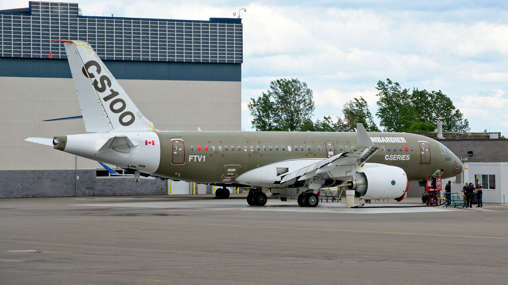
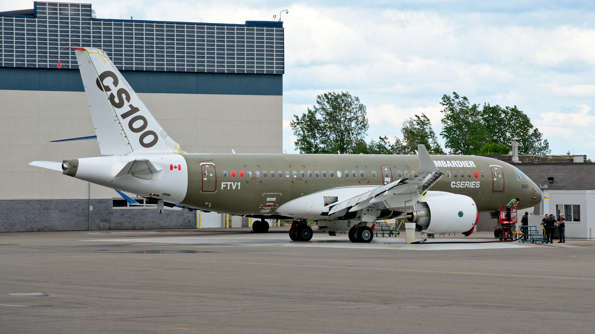
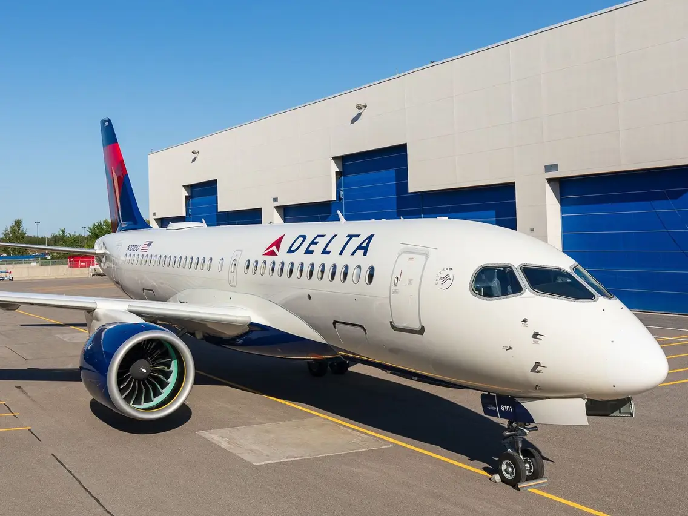

Airbus Business Jet Two-Twenty is a variant of the A220 commercial airliner. It started life as the Bombardier C-Series  and was later incorportaed into the Airbus product line.
It started life as the Bombardier C-Series  and was later incorportaed into the Airbus product line.
Powered by Pratt & Whitney PW1500G geared turbofan engines under its wings, the twinjet features fly-by-wire flight controls, a carbon composite wing, an aluminium-lithium fuselage and optimised aerodynamics for better fuel efficiency.

Delta Air Lines is the largest customer and operator, with 95 A220 ordered and respectively 51 airplanes in its fleet. 
The ACJ Two-Twenty builds upon A220's spacious cabin, efficiency and advanced systems for a luxurious yet practical business jet And its techonology makes it a pleasure to fly